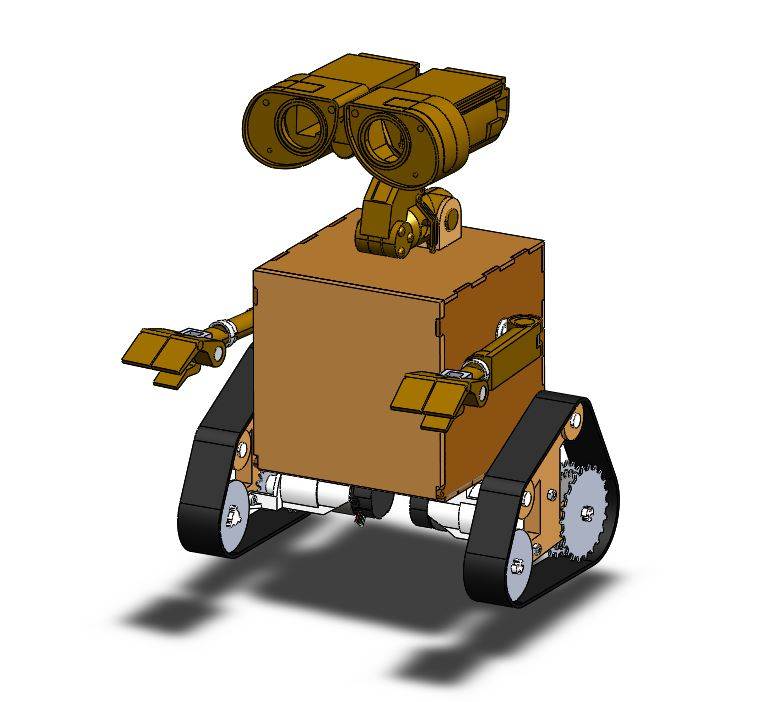

System Diagram
How is Wall-E built?


Our assembly consists of three different subsystems: the “head”, the “body”, and the “drivetrain”. Shown here is the full Wall-E CAD versus the final product, which we will elaborate more on in mechanical. There is also a more in-depth discussion on how our electronics are connected to each other (to power each subsystem) in our electrical page.
How does Wall-E work?
Wall-E operates in 4 different modes. Pressing button 1 will incrementally switch between these modes. Pressing button 2 toggles between running a button 1 mode or not running any code as well. Button 2 essentially acts as a kill switch without shutting down power in case Wall-E needs to stop moving immediately. The four modes that button 1 moves between are:
- Mode 1: Upon being powered on, Wall-E will play a greeting sequence of motions to indicate that its servos move properly, and he’s ready to take audio input.
- Mode 2: Wall-E will listen for a metronome beat and run a simple frequency analysis algorithm to determine the bpm being played. Wall-E blinks LED1 to the calculated BPM.
- Mode 3: Wall-E will move its servos and dc motors to the BPM. We will play a song that matches the bpm we gave Wall-E during mode 2.
- Mode 4: Wall-E will reset all of its global variables so its ready to run through modes 1-3 again.